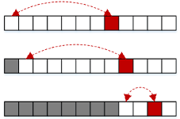
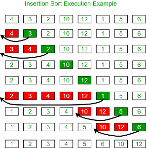

Algorithm
Sorting
https://www.geeksforgeeks.org/sorting-algorithms/
Find and Replace
Bubble sort
Worst and Average Case Time Complexity: O(n*n). Worst case occurs when array is reverse sorted.
Best Case Time Complexity: O(n). Best case occurs when array is already sorted.
Auxiliary Space: O(1)
Dưới đây là minh họa quá thay đổi của một mảng dữ liệu khi áp dụng giải thuật "Bubble sort". Nhận xét, đối với một mảng N phần tử:
- Sau vòng sắp xếp thứ i thì phần tử lớn thứ i sẽ nằm tại vị trí N - i (bubble).
- Phần tử lớn nhất trong mỗi vòng sắp xếp i sẽ nổi dần lên trong dãy.
i = 0: 100 82 9 11 79
0: 82 100 9 11 79
1: 82 9 100 11 79
2: 82 9 11 100 79
3: 82 9 11 79 100 // 100 is risen up
i = 1: 82 9 11 79 100
0: 9 82 11 79 100
1: 9 11 82 79 100
2: 9 11 79 82 100 // 82 is risen up and so on
i = 2: 9 11 79 82 100
0: 9 11 79 82 100
1: 9 11 79 82 100
i = 3: 9 11 79 82 100
0: 9 11 79 82 100
Mã nguồn của giải thuật đơn giản như dưới đây
for (i = 0; i < n-1; i++) { /*Round i*/
for (j = 0; j < n-i-1; j++) {
if (arr[j] > arr[j+1])
swap(&arr[j], &arr[j+1]);
}
}
Recursion
Xét đoạn mã
for (int i=0; i<n-1; i++)
if (arr[i] > arr[i+1])
swap(&arr[i], &arr[i+1]);
Sau khi thực hiện đoạn mã này thì phần tử lớn nhất của mảng sẽ được "nổi lên" tại vị trí sau cùng. Lợi dụng tính chất này ta có thể áp dụng phương pháp đệ quy vào "Buble sort".
- Đệ quy dừng lại khi độ dài của mảng bằng 1.
- Tiến hành đưa phần tử lớn nhất của mảng ra vị trí sau cùng.
- Tiến hành "bubble sort" cho mảng con (loại bỏ phần tử cuối, cũng là phần tử lớn nhất) sau khi phần tử lớn nhất đã nằm ở cuối mảng.
Diễn biến của một mảng khi sử dụng phương pháp đệ quy trong "Buble sort"
---34 3 94 2 3
-->3 34 2 3 94
---3 34 2 3
-->3 2 3 34
---3 2 3
-->2 3 3
---2 3
-->2 3
Selection sort

Ý tưởng của "selection sort" là tìm phần tử bé nhất của mảng (select) và đổi chỗ cho phần tử đầu tiên. Tiến hành tuần tự như vậy cho mảng con (là kết quả của mảng cha loại bỏ đi phần tử có chỉ số bé nhất -> chính là phần tử nhỏ nhất vừa được đổi chỗ)
Round 0
84 66 98 55 70
55 66 98 84 70 // 55 is the smallest
Round 1
55 66 98 84 70
55 66 98 84 70 // 66 is the smallest and already in the first place
Round 2
55 66 98 84 70
55 66 70 84 98 // 70 is the smallest
Round 3
55 66 70 84 98
55 66 70 84 98 // 84 is the smallest
Vấn đề của selection gặp phải đó là tính ổn định "stable". Giả sử có hai phần tử trong mảng A và B có giá trị key bằng nhau, nhưng kết quả của "selection sort" có thể dẫn đến B đứng trước A trong sorted array.
Giải thuật "selection sort" có thể được cải tiến để thỏa mãn tính chất "stable" này. Thay vì giá trị nhỏ nhất trong một dãy được đổi chỗ với vị trí hiện tại thì toàn bộ mảng sẽ được dịch phải một đơn vị để tạo khoảng trống cho số bé nhất. Giải thuật này có một số điểm tương tự với insertion sort.
Insertion sort
Ý tưởng của "insertion sort" là tìm phần tử bé nhất trong mảng và đưa về đầu mảng. Ý tưởng này có phần nào giống với selection sort nhưng khác ở cách phần tử bé nhât được đưa về đầu mảng.
Ở "selection sort" phần tử bé nhất được đổi chỗ cho phần tử đầu mảng, trong khi ở "insertion sort" phần tử bé nhất được chèn vào đầu mảng. Điều này có nghĩa là các phần tử tính từ đầu mảng đến trước phần tử bé nhất
